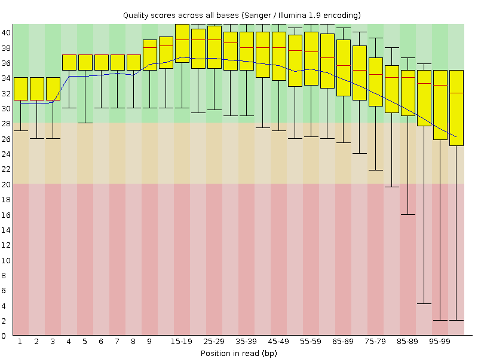
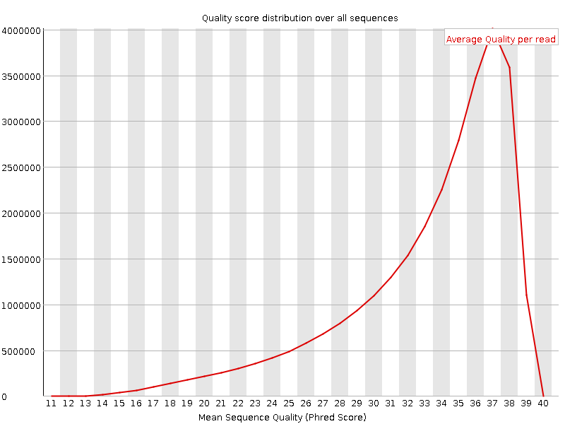
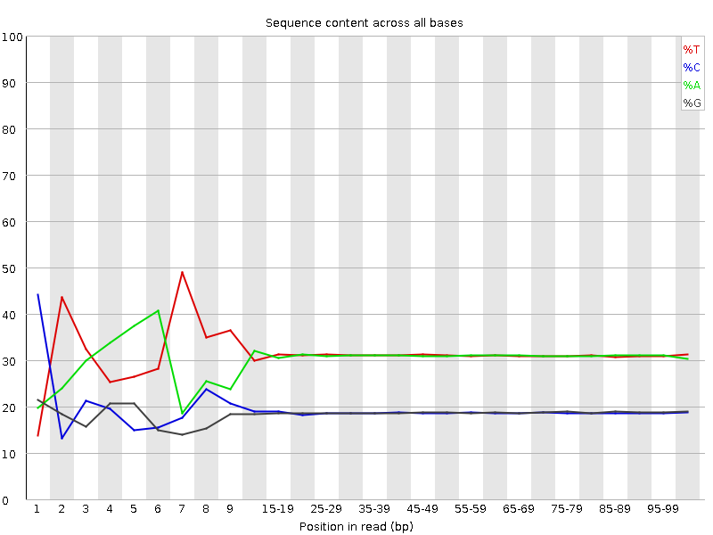
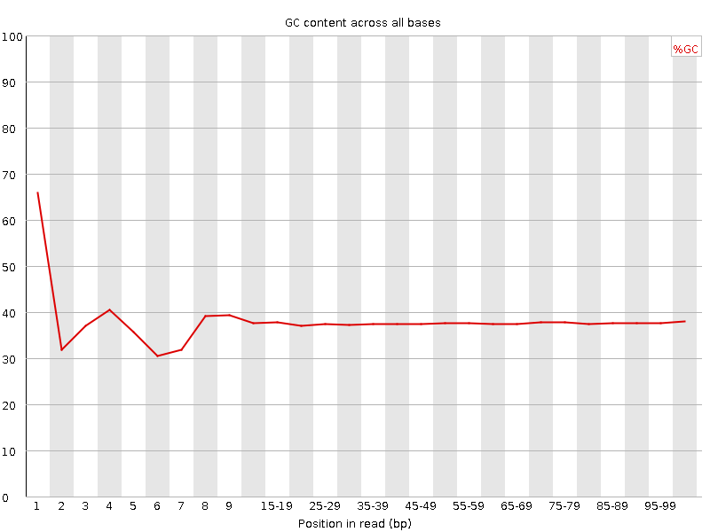
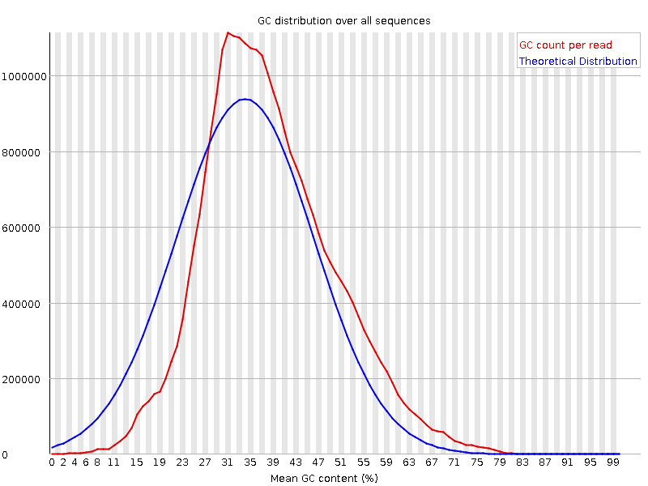
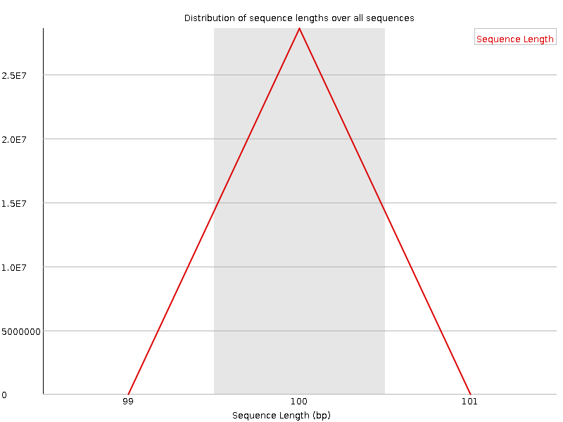
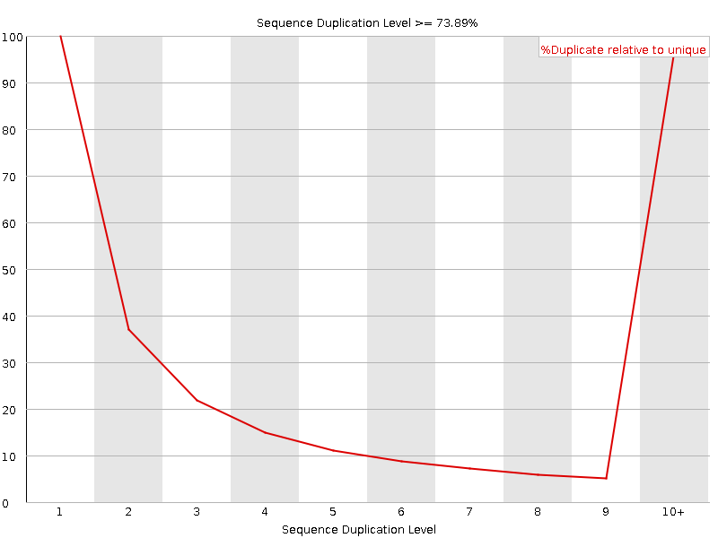
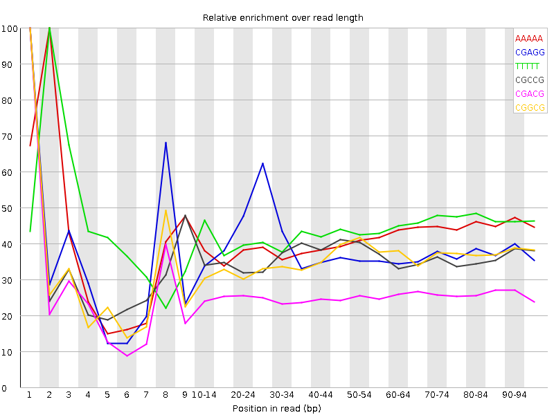

![[OK]](Icons/tick.png) Basic Statistics
Basic Statistics
| Measure | Value |
|---|---|
| Filename | c6_2.fq |
| File type | Conventional base calls |
| Encoding | Sanger / Illumina 1.9 |
| Total Sequences | 28622027 |
| Filtered Sequences | 0 |
| Sequence length | 100 |
| %GC | 37 |
Per base sequence quality

Per sequence quality scores

![[FAIL]](Icons/error.png) Per base sequence content
Per base sequence content

Per base GC content

![[WARN]](Icons/warning.png) Per sequence GC content
Per sequence GC content

Per base N content

Sequence Length Distribution

Sequence Duplication Levels

Overrepresented sequences
| Sequence | Count | Percentage | Possible Source |
|---|---|---|---|
| CTAATTTTCATCTTAATTCAACATCGAGGTCGCAAACATCTTTATCTATA | 63535 | 0.22197938671499404 | No Hit |
| CTTTCGTACAATTAATTAATATTTTATTATAGATAGAAACCAATCTGACT | 52022 | 0.1817551216760434 | No Hit |
Kmer Content

| Sequence | Count | Obs/Exp Overall | Obs/Exp Max | Max Obs/Exp Position |
|---|---|---|---|---|
| AAAAA | 17774680 | 2.284887 | 5.53951 | 2 |
| CGAGG | 2436240 | 2.2751167 | 5.8926907 | 1 |
| TTTTT | 18084125 | 2.2088597 | 5.009711 | 2 |
| CGCCG | 1431400 | 2.1408794 | 5.917805 | 1 |
| CGACG | 2238735 | 2.06129 | 8.01268 | 1 |
| CGGCG | 1329610 | 2.016985 | 5.667571 | 1 |
| CGCGG | 1217600 | 1.8470685 | 5.7671437 | 1 |
| TCGAG | 3239405 | 1.8174748 | 5.1068325 | 7 |
| CTCGA | 3179750 | 1.7589318 | 9.428373 | 1 |
| CGCGA | 1808755 | 1.6653908 | 6.0418386 | 1 |
| CTGGA | 2883160 | 1.6176031 | 6.9320984 | 1 |
| CGATC | 2911255 | 1.6104094 | 5.2228703 | 4 |
| ATCGA | 4668320 | 1.5897244 | 5.3101687 | 6 |
| CTTCC | 2904250 | 1.5678495 | 5.134669 | 1 |
| CGCCA | 1712095 | 1.5542365 | 5.6375203 | 1 |
| CGAGA | 2732495 | 1.5488204 | 5.4311194 | 1 |
| CTCCA | 2819620 | 1.5377984 | 7.1381893 | 1 |
| CCGGC | 1018440 | 1.523234 | 5.115819 | 1 |
| GTCGA | 2694875 | 1.5119653 | 5.1625175 | 1 |
| CAAAA | 7102765 | 1.4831504 | 5.121093 | 1 |
| CTTTC | 4439350 | 1.4603485 | 7.0595493 | 1 |
| CTTTT | 7262605 | 1.4557819 | 6.2432976 | 1 |
| CGAAG | 2541405 | 1.4405074 | 5.397197 | 1 |
| CTTCG | 2630045 | 1.4400605 | 6.5117455 | 1 |
| CTCGC | 1597565 | 1.4355202 | 6.695197 | 1 |
| CTCGT | 2605330 | 1.426528 | 7.4356146 | 1 |
| CTCGG | 1554530 | 1.4167625 | 8.5500965 | 1 |
| CTGGC | 1521405 | 1.3865733 | 5.136745 | 1 |
| CTTCA | 4055635 | 1.3478278 | 5.5094876 | 1 |
| CGAAA | 3651025 | 1.2560719 | 5.5322294 | 1 |
| CTTGG | 2215030 | 1.230111 | 6.2212853 | 1 |
| CTTTG | 3577070 | 1.1934706 | 6.0521383 | 1 |
| CTTGA | 3352565 | 1.1300559 | 5.2190585 | 1 |